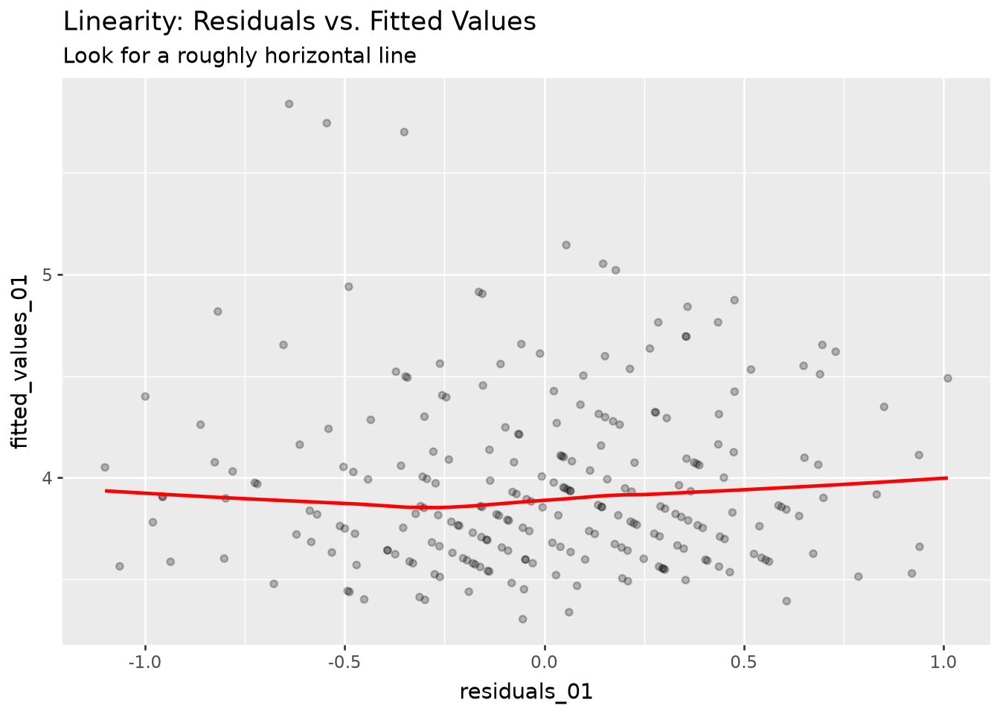
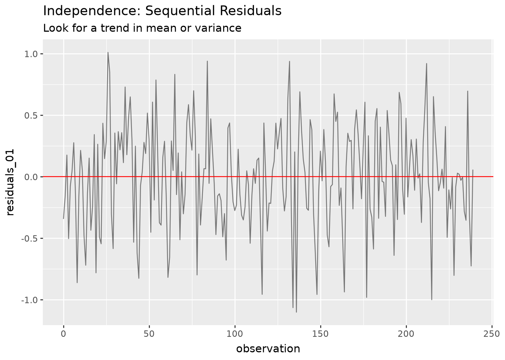
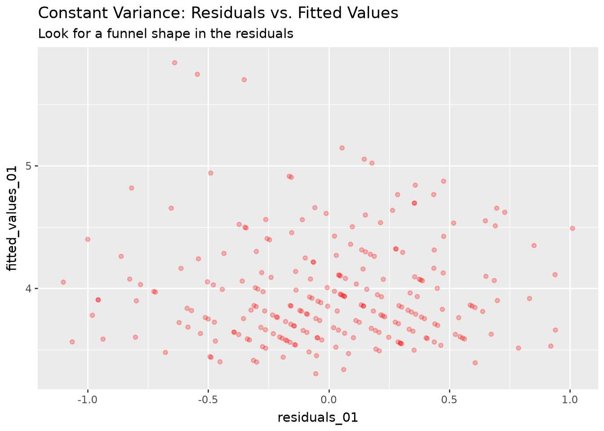
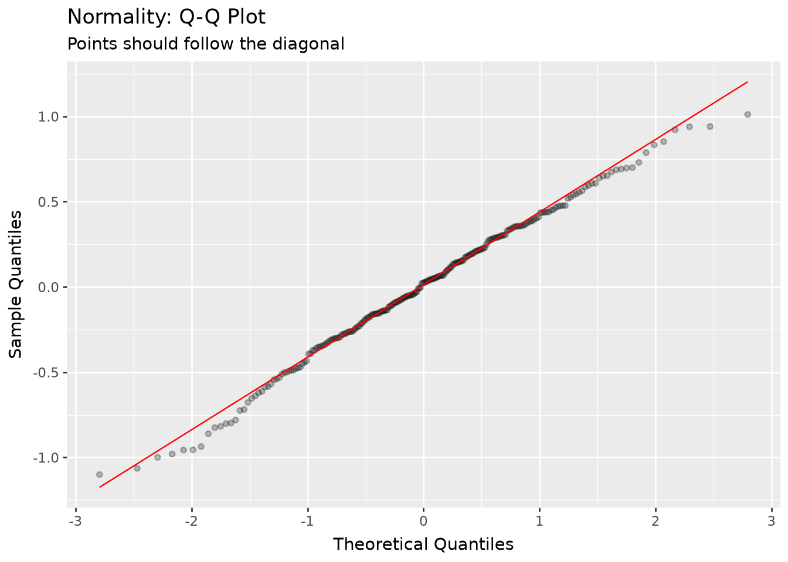
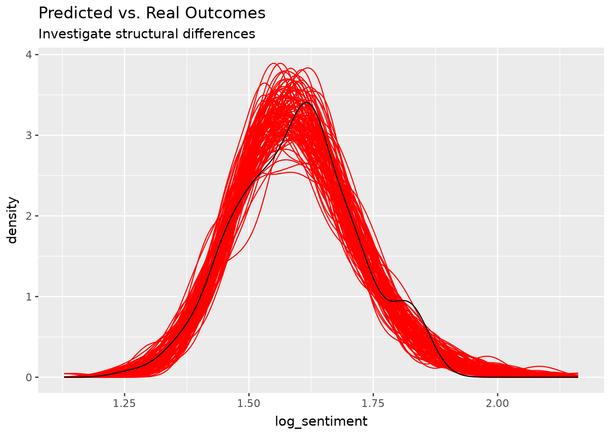

import numpy as npimport matplotlib.pyplot as pltimport pandas as pdimport statsmodels.formula.api as smfimport statsmodels.api as smimport bambi as bmbimport arviz as azimport polars as plfrom pyprojroot.here import herefrom plotnine import*from sklearn.model_selection import train_test_splitfrom sklearn.metrics import mean_squared_error, root_mean_squared_error
g++ not available, if using conda: `conda install gxx`
<>:2: SyntaxWarning: invalid escape sequence '\C'
<>:2: SyntaxWarning: invalid escape sequence '\C'
C:\Users\abrar\AppData\Local\Temp\ipykernel_8224\1448471109.py:2: SyntaxWarning: invalid escape sequence '\C'
Could not determine dtype for column 34, falling back to string
Could not determine dtype for column 36, falling back to string
shape: (5, 2)
region
count
str
u32
"Other"
2
"West"
8
"Midwest"
63
"Mountain"
72
"East"
95
fit OLS and collect residuals
# Dummy code discrete predictors- use east as reference case becuase it has the most entriessnow_train = (snow_data.to_dummies(columns = ['region'], drop_first =False).select(pl.exclude('region_East')))# fit a modelfit_01 = smf.ols("sentiment ~ 1 + snow_making + days_open_last + runs + avgsnow + region_Midwest + region_Mountain + region_Other + region_West", data = snow_train).fit()#save residualssnow_train = (snow_train .with_columns(residuals_01 = pl.Series(fit_01.resid)) .with_columns(fitted_values_01 = pl.Series(fit_01.fittedvalues)) .with_row_index('observation'))
exercise_7: exploring residuals LINEARITY:
(ggplot( snow_train, aes( x ='residuals_01', y ='fitted_values_01' ) )+ geom_point(alpha =0.25)+ geom_smooth( method ='lowess', color ='red' )+ labs( title ='Linearity: Residuals vs. Fitted Values', subtitle ='Look for a roughly horizontal line' ))
d:\CoursesUSU\Final_Semester\Intro_Reg_ML\DATA5600\data-5600\Project1\Data-5600-Project-1\.venv\Lib\site-packages\plotnine\stats\smoothers.py:342: PlotnineWarning: Confidence intervals are not yet implemented for lowess smoothings.

INDEPENDENCE:
(ggplot( snow_train, aes(x ='observation', y ='residuals_01') )+ geom_line(alpha =0.5)+ geom_hline(yintercept =0, color ='red')+ labs( title ='Independence: Sequential Residuals', subtitle ='Look for a trend in mean or variance' ))

CONSTANT VARIANCE:
(ggplot( snow_train, aes( x ='residuals_01', y ='fitted_values_01' ) )+ geom_point(alpha =0.25, color ='red')+ labs( title ='Constant Variance: Residuals vs. Fitted Values', subtitle ='Look for a funnel shape in the residuals' ))

NORMALITY:
(ggplot( snow_train, aes(sample ='residuals_01') )+ stat_qq(alpha =0.25)+ stat_qq_line(color ='red')+ labs( title ='Normality: Q-Q Plot', subtitle ='Points should follow the diagonal', x ='Theoretical Quantiles', y ='Sample Quantiles' ))

MULTICOLINEARITY / IDENTIFIABILITY:
from statsmodels.stats.outliers_influence import variance_inflation_factorsnow_train.columnspredictors = ['snow_making','days_open_last','runs','avgsnow','region_Midwest','region_Mountain','region_Other','region_West',]X_train = snow_train.select(predictors)pl.DataFrame({'predictor': predictors,'VIF': [ variance_inflation_factor(X_train, i)for i inrange(X_train.shape[1]) ]}).sort('VIF', descending =True)
shape: (8, 2)
predictor
VIF
str
f64
"avgsnow"
3.085661
"region_Mountain"
2.235344
"runs"
1.928066
"days_open_last"
1.660274
"region_West"
1.467924
"snow_making"
1.343679
"region_Midwest"
1.268605
"region_Other"
1.017541
exercise_8: training splits
# Specify the design matrix and outcomeX = snow_train.select(pl.exclude('sentiment'))y = snow_train.select('sentiment')# Split into training and testing setsX_train, X_test, y_train, y_test = train_test_split(X, y, test_size =0.2, random_state =42)
C:\Users\abrar\AppData\Local\Temp\ipykernel_8224\1219671652.py:14: SingularMatrixWarning: The design matrix is rank-deficient. The model parameters are not uniquely determined.
C:\Users\abrar\AppData\Local\Temp\ipykernel_8224\1219671652.py:17: SingularMatrixWarning: The design matrix is rank-deficient. The model parameters are not uniquely determined.
shape: (11, 4)
parameter
log_coef
p_value
percent_change
str
f64
f64
f64
"observation"
-0.000002
0.82001
-0.000225
"snow_making"
-0.000029
2.7544e-7
-0.002878
"days_open_last"
-0.000554
2.8165e-47
-0.055396
"runs"
-0.001203
1.8645e-123
-0.120209
"avgsnow"
-0.000148
2.3529e-38
-0.01476
…
…
…
…
"region_Mountain"
0.001844
0.405474
0.184547
"region_Other"
-0.052897
5.8125e-15
-5.152246
"region_West"
0.02368
1.9038e-8
2.396213
"residuals_01"
0.205774
3.4476e-189
22.847553
"fitted_values_01"
0.407182
4.2743e-280
50.257802
# Keep only the outcome and our four resort-attribute predictorssnow_ols = snow_data.select('sentiment', 'snow_making', 'days_open_last', 'runs', 'avgsnow')snow_ols.head()
shape: (5, 5)
sentiment
snow_making
days_open_last
runs
avgsnow
f64
i64
i64
i64
i64
4.15
113
150
76
669
3.55
60
45
36
350
3.85
30
150
13
69
3.55
104
122
55
260
4.0
80
115
65
250
# Specify the outcomeX = snow_ols.select(pl.exclude('sentiment'))y = snow_ols.select('sentiment')# Split into training and testing setsX_train, X_test, y_train, y_test = train_test_split( X, y, test_size =0.2, random_state =42)
# Snow Making is heavily right-skewed, log transformed to normalizeX_train = (X_train .with_columns((pl.col('snow_making') +1).log().alias('log_snow_making')) .select(pl.exclude('snow_making')) .to_pandas())X_test = (X_test .with_columns((pl.col('snow_making') +1).log().alias('log_snow_making')) .select(pl.exclude('snow_making')) .to_pandas())X_train.head()
days_open_last
runs
avgsnow
log_snow_making
0
154
50
130
5.129899
1
97
43
110
5.459586
2
135
86
156
6.175867
3
116
23
40
4.795791
4
155
116
314
5.963579
Initial model
# Add constant for interceptX_train = sm.add_constant(X_train)# Fit the modelfit_05 = sm.OLS(y_train.to_pandas(), X_train).fit()fit_05.summary()
OLS Regression Results
Dep. Variable:
sentiment
R-squared:
0.481
Model:
OLS
Adj. R-squared:
0.470
Method:
Least Squares
F-statistic:
43.28
Date:
Wed, 07 Oct 2026
Prob (F-statistic):
1.12e-25
Time:
15:19:32
Log-Likelihood:
-114.09
No. Observations:
192
AIC:
238.2
Df Residuals:
187
BIC:
254.5
Df Model:
4
Covariance Type:
nonrobust
coef
std err
t
P>|t|
[0.025
0.975]
const
2.9002
0.182
15.943
0.000
2.541
3.259
days_open_last
0.0019
0.001
1.456
0.147
-0.001
0.005
runs
0.0048
0.001
5.486
0.000
0.003
0.007
avgsnow
0.0010
0.000
3.043
0.003
0.000
0.002
log_snow_making
0.0850
0.039
2.187
0.030
0.008
0.162
Omnibus:
0.702
Durbin-Watson:
1.813
Prob(Omnibus):
0.704
Jarque-Bera (JB):
0.819
Skew:
-0.079
Prob(JB):
0.664
Kurtosis:
2.722
Cond. No.
1.42e+03
Notes: [1] Standard Errors assume that the covariance matrix of the errors is correctly specified. [2] The condition number is large, 1.42e+03. This might indicate that there are strong multicollinearity or other numerical problems.
# Combine the outcome and predictors into one training framesnow_train = pl.concat([y_train, pl.from_pandas(X_train.drop(columns ='const'))], how ='horizontal_extend').to_pandas()predictors = ['days_open_last', 'runs', 'avgsnow', 'log_snow_making']fr_fit = smf.ols('sentiment ~ '+' + '.join(predictors), data = snow_train).fit()fr_fit.summary()
OLS Regression Results
Dep. Variable:
sentiment
R-squared:
0.481
Model:
OLS
Adj. R-squared:
0.470
Method:
Least Squares
F-statistic:
43.28
Date:
Wed, 07 Oct 2026
Prob (F-statistic):
1.12e-25
Time:
15:19:32
Log-Likelihood:
-114.09
No. Observations:
192
AIC:
238.2
Df Residuals:
187
BIC:
254.5
Df Model:
4
Covariance Type:
nonrobust
coef
std err
t
P>|t|
[0.025
0.975]
Intercept
2.9002
0.182
15.943
0.000
2.541
3.259
days_open_last
0.0019
0.001
1.456
0.147
-0.001
0.005
runs
0.0048
0.001
5.486
0.000
0.003
0.007
avgsnow
0.0010
0.000
3.043
0.003
0.000
0.002
log_snow_making
0.0850
0.039
2.187
0.030
0.008
0.162
Omnibus:
0.702
Durbin-Watson:
1.813
Prob(Omnibus):
0.704
Jarque-Bera (JB):
0.819
Skew:
-0.079
Prob(JB):
0.664
Kurtosis:
2.722
Cond. No.
1.42e+03
Notes: [1] Standard Errors assume that the covariance matrix of the errors is correctly specified. [2] The condition number is large, 1.42e+03. This might indicate that there are strong multicollinearity or other numerical problems.
Bayesian Model
# Specify a Bayesian linear regressionba_model = bmb.Model('sentiment ~ '+' + '.join(predictors), data = snow_train)# Specify priorspriors_dict = {'Intercept': bmb.Prior('Uniform', lower =-100, upper =100),**{term: bmb.Prior('Uniform', lower =-100, upper =100) for term in predictors},'sigma': bmb.Prior('Exponential', lam =1)}ba_model.set_priors(priors = priors_dict)ba_model
# Fit a Bayesian linear regressionba_fit = ba_model.fit()
Initializing NUTS using jitter+adapt_diag...
Multiprocess sampling (4 chains in 4 jobs)
NUTS: [sigma, Intercept, days_open_last, runs, avgsnow, log_snow_making]
Sampling 4 chains for 1_000 tune and 1_000 draw iterations (4_000 + 4_000 draws total) took 15 seconds.
az.summary(ba_fit, ci_kind ='hdi', ci_prob =0.95)
mean
sd
hdi95_lb
hdi95_ub
ess_bulk
ess_tail
r_hat
mcse_mean
mcse_sd
sigma
0.4464
0.0223
0.41
0.49
4478
3018
1.01
0.00033
0.00035
Intercept
2.896
0.182
2.5
3.2
4590
3574
1.00
0.0027
0.0024
days_open_last
0.00193
0.00132
-0.0005
0.0046
4681
3197
1.00
1.9e-05
2.1e-05
runs
0.00478
0.00089
0.003
0.0065
4453
3242
1.00
1.3e-05
1.3e-05
avgsnow
0.001006
0.000331
0.00036
0.0016
4427
3166
1.00
5e-06
4.8e-06
log_snow_making
0.086
0.039
0.0072
0.16
3767
3007
1.00
0.00063
0.00057
Model without region
# Model without regionX = snow_data.select(['snow_making','days_open_last','runs','avgsnow'])y = snow_data.select('sentiment')X_train, X_test, y_train, y_test = train_test_split(X, y, test_size=0.2, random_state=42)y_train_log = y_train.with_columns((pl.col('sentiment') +1).log().alias('log_sentiment')).select('log_sentiment')y_test_log = y_test.with_columns((pl.col('sentiment') +1).log().alias('log_sentiment')).select('log_sentiment')train_0 = pl.concat([y_train_log, X_train], how='horizontal').to_pandas()fit_0 = smf.ols('log_sentiment ~ snow_making + days_open_last+ runs + avgsnow', data=train_0).fit()pred_0 = fit_0.predict(X_test.to_pandas())mse_0 = mean_squared_error(y_test_log.to_pandas(), pred_0)rmse_0 = root_mean_squared_error(y_test_log.to_pandas(), pred_0)print(fit_0.summary())print("Without region MSE:", mse_0)print("Without region RMSE:", rmse_0)
OLS Regression Results
==============================================================================
Dep. Variable: log_sentiment R-squared: 0.440
Model: OLS Adj. R-squared: 0.428
Method: Least Squares F-statistic: 36.79
Date: Wed, 07 Oct 2026 Prob (F-statistic): 1.13e-22
Time: 15:19:53 Log-Likelihood: 186.80
No. Observations: 192 AIC: -363.6
Df Residuals: 187 BIC: -347.3
Df Model: 4
Covariance Type: nonrobust
==================================================================================
coef std err t P>|t| [0.025 0.975]
----------------------------------------------------------------------------------
Intercept 1.4392 0.027 54.186 0.000 1.387 1.492
snow_making 6.256e-05 5.67e-05 1.103 0.271 -4.93e-05 0.000
days_open_last 0.0005 0.000 1.957 0.052 -4.42e-06 0.001
runs 0.0009 0.000 4.420 0.000 0.001 0.001
avgsnow 0.0002 6.88e-05 2.734 0.007 5.24e-05 0.000
==============================================================================
Omnibus: 3.645 Durbin-Watson: 1.810
Prob(Omnibus): 0.162 Jarque-Bera (JB): 3.632
Skew: -0.333 Prob(JB): 0.163
Kurtosis: 2.904 Cond. No. 1.28e+03
==============================================================================
Notes:
[1] Standard Errors assume that the covariance matrix of the errors is correctly specified.
[2] The condition number is large, 1.28e+03. This might indicate that there are
strong multicollinearity or other numerical problems.
Without region MSE: 0.005751529740316033
Without region RMSE: 0.07583884057866414
C:\Users\abrar\AppData\Local\Temp\ipykernel_8224\59180273.py:10: DeprecationWarning: the default behavior of `how='horizontal'` for `concat` is deprecated and will require equal heights in the next breaking release. Use `how='horizontal_extend'` to keep the current behavior.
(Deprecated in version 1.42.1)
Model with region
# Model with regionsnow_train = (snow_data .to_dummies(columns=['region'], drop_first=False) .select(pl.exclude('region_East')))region_predictors = ['snow_making','days_open_last','runs','avgsnow','region_Midwest','region_Mountain','region_Other','region_West']X = snow_train.select(region_predictors)y = snow_train.select('sentiment')X_train, X_test, y_train, y_test = train_test_split(X, y, test_size=0.2, random_state=42)y_train_log = y_train.with_columns((pl.col('sentiment') +1).log().alias('log_sentiment')).select('log_sentiment')y_test_log = y_test.with_columns((pl.col('sentiment') +1).log().alias('log_sentiment')).select('log_sentiment')train_01 = pl.concat([y_train_log, X_train], how='horizontal').to_pandas()fit_01 = smf.ols('log_sentiment ~ '+' + '.join(region_predictors), data=train_01).fit()pred_01 = fit_01.predict(X_test.to_pandas())mse_01 = mean_squared_error(y_test_log.to_pandas(), pred_01)rmse_01 = root_mean_squared_error(y_test_log.to_pandas(), pred_01)print(fit_01.summary())print("With region MSE:", mse_01)print("With region RMSE:", rmse_01)# residuals for existing diagnostics (I used AI for this portion, could be worth a look over)snow_train = (pl.from_pandas(train_01) .with_columns(residuals_01 = pl.Series(fit_01.resid)) .with_columns(fitted_values_01 = pl.Series(fit_01.fittedvalues)) .with_row_index('observation'))
C:\Users\abrar\AppData\Local\Temp\ipykernel_8224\2753579072.py:18: DeprecationWarning: the default behavior of `how='horizontal'` for `concat` is deprecated and will require equal heights in the next breaking release. Use `how='horizontal_extend'` to keep the current behavior.
(Deprecated in version 1.42.1)
OLS Regression Results
==============================================================================
Dep. Variable: log_sentiment R-squared: 0.448
Model: OLS Adj. R-squared: 0.424
Method: Least Squares F-statistic: 18.54
Date: Wed, 07 Oct 2026 Prob (F-statistic): 3.26e-20
Time: 15:19:53 Log-Likelihood: 188.06
No. Observations: 192 AIC: -358.1
Df Residuals: 183 BIC: -328.8
Df Model: 8
Covariance Type: nonrobust
===================================================================================
coef std err t P>|t| [0.025 0.975]
-----------------------------------------------------------------------------------
Intercept 1.4490 0.029 50.762 0.000 1.393 1.505
snow_making 5.693e-05 5.8e-05 0.981 0.328 -5.76e-05 0.000
days_open_last 0.0005 0.000 1.773 0.078 -5.55e-05 0.001
runs 0.0009 0.000 4.344 0.000 0.000 0.001
avgsnow 0.0002 9.55e-05 2.158 0.032 1.76e-05 0.000
region_Midwest -0.0175 0.017 -1.023 0.308 -0.051 0.016
region_Mountain -0.0076 0.023 -0.336 0.737 -0.052 0.037
region_Other 0.0665 0.067 0.995 0.321 -0.065 0.198
region_West -0.0214 0.043 -0.494 0.622 -0.107 0.064
==============================================================================
Omnibus: 3.388 Durbin-Watson: 1.810
Prob(Omnibus): 0.184 Jarque-Bera (JB): 3.312
Skew: -0.321 Prob(JB): 0.191
Kurtosis: 2.948 Cond. No. 3.21e+03
==============================================================================
Notes:
[1] Standard Errors assume that the covariance matrix of the errors is correctly specified.
[2] The condition number is large, 3.21e+03. This might indicate that there are
strong multicollinearity or other numerical problems.
With region MSE: 0.005474492759116192
With region RMSE: 0.07398981523910025
Interpretation of Results
Region Adjusted R squared is 0.424, while removing region brings adjusted R squared to 0.428. This is already telling, as the removal of parameters actually increased the R squared. Typically we account for a slight increase with more parameters, illustrating a stronger model fit.
The model RMSE without region is 0.075, while the RMSE including region is 0.074. This change is small
OLS Regression Results
==============================================================================
Dep. Variable: log_sentiment R-squared: 0.482
Model: OLS Adj. R-squared: 0.464
Method: Least Squares F-statistic: 26.87
Date: Wed, 07 Oct 2026 Prob (F-statistic): 3.12e-29
Time: 15:19:53 Log-Likelihood: 244.96
No. Observations: 240 AIC: -471.9
Df Residuals: 231 BIC: -440.6
Df Model: 8
Covariance Type: nonrobust
===================================================================================
coef std err t P>|t| [0.025 0.975]
-----------------------------------------------------------------------------------
Intercept 1.4450 0.023 61.732 0.000 1.399 1.491
snow_making 2.759e-05 2.4e-05 1.150 0.251 -1.97e-05 7.49e-05
days_open_last 0.0006 0.000 2.872 0.004 0.000 0.001
runs 0.0010 0.000 6.367 0.000 0.001 0.001
avgsnow 0.0002 7.84e-05 2.154 0.032 1.44e-05 0.000
region_Midwest -0.0248 0.015 -1.691 0.092 -0.054 0.004
region_Mountain -0.0158 0.019 -0.843 0.400 -0.053 0.021
region_Other 0.0574 0.064 0.901 0.368 -0.068 0.183
region_West -0.0259 0.039 -0.668 0.505 -0.102 0.050
==============================================================================
Omnibus: 6.606 Durbin-Watson: 1.766
Prob(Omnibus): 0.037 Jarque-Bera (JB): 6.613
Skew: -0.407 Prob(JB): 0.0366
Kurtosis: 3.018 Cond. No. 4.24e+03
==============================================================================
Notes:
[1] Standard Errors assume that the covariance matrix of the errors is correctly specified.
[2] The condition number is large, 4.24e+03. This might indicate that there are
strong multicollinearity or other numerical problems.
shape: (9, 5)
parameter
lower
upper
lower_percent
upper_percent
str
f64
f64
f64
f64
"Intercept"
1.398907
1.491148
305.07681
344.219234
"snow_making"
-0.00002
0.000075
-0.001968
0.007486
"days_open_last"
0.000202
0.001084
0.020196
0.108475
"runs"
0.000699
0.001326
0.069937
0.132663
"avgsnow"
0.000014
0.000323
0.00144
0.032355
"region_Midwest"
-0.053762
0.004109
-5.234206
0.411704
"region_Mountain"
-0.052666
0.02109
-5.130327
2.131439
"region_Other"
-0.068066
0.182788
-6.580132
20.056
"region_West"
-0.102175
0.05041
-9.712873
5.170192
# make predictions with intervalsX_new = pl.DataFrame({'snow_making': [100, 500, 100, 500],# guage differences in snow making'days_open_last': [120, 120, 120, 120], # kept constant, as its something difficult for resorts to fully control'runs': [30, 10, 10, 30], # to guage the effect on runs, and if resorts should build more'avgsnow': [200, 200, 200, 200],'region_Midwest': [0, 0, 0, 0],'region_Mountain': [1, 1, 0, 0], 'region_Other': [0, 0, 0, 0],'region_West': [0, 0, 1, 1] #use the 2 biggest regions to guage profit based on region})X_new = X_new.with_columns(log_pred = pl.Series(fr_fit.predict(X_new.to_pandas())))X_new = X_new.with_columns(pred_sentiment = (np.exp(pl.col('log_pred')) -1))X_newprint(fr_fit.get_prediction(X_new.to_pandas()).summary_frame(alpha=0.05))
Initializing NUTS using jitter+adapt_diag...
d:\CoursesUSU\Final_Semester\Intro_Reg_ML\DATA5600\data-5600\Project1\Data-5600-Project-1\.venv\Lib\site-packages\pytensor\tensor\rewriting\elemwise.py:1004: UserWarning: Loop fusion failed because the resulting node would exceed the kernel argument limit.
Multiprocess sampling (4 chains in 4 jobs)
NUTS: [sigma, Intercept, snow_making, days_open_last, runs, avgsnow, region_Midwest, region_Mountain, region_Other, region_West]
Sampling 4 chains for 1_000 tune and 1_000 draw iterations (4_000 + 4_000 draws total) took 16 seconds.

Interpretation of Predicted vs Real Outcomes
The predicted outcomes show a large range, showing signs of potential under fitting. our prediction falls within the deviation, showing the parameters selected align with the assumptions needed for the regression. There could be more work done to fit this model.